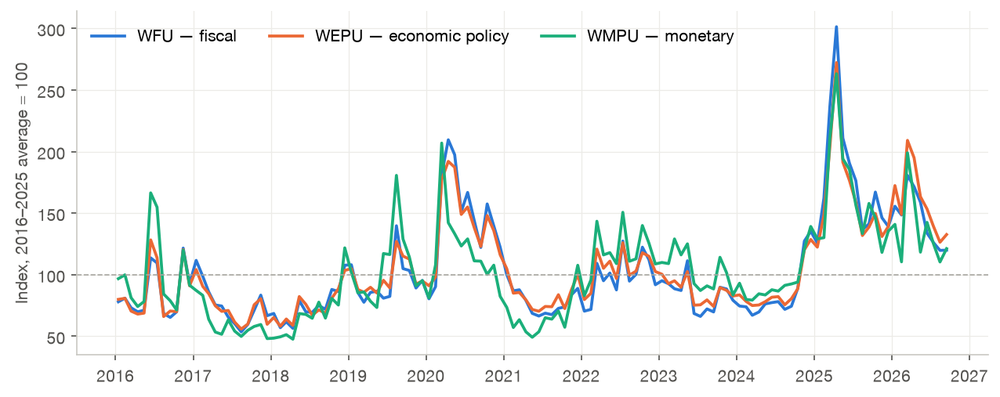

The World Fiscal Uncertainty Index
Daily to annual World Fiscal Uncertainty index, with selected fiscal and policy episodes.
Definition
The World Fiscal Uncertainty index (WFU) is the share of all web news articles processed by GDELT worldwide, in English and in approximately 65 machine-translated languages, that carry at the same time an uncertainty term, an economy term and a fiscal term (taxation, government spending, budgets, deficits or public debt). The share is scaled so that its 2016–2025 average equals 100; a value of 200 indicates that such articles were twice as frequent as on average over the decade. Each article enters the world index once, and the world index is not shrunk (see Methodology).
The index, 2016–2026
Figure 1 (interactive). World Fiscal Uncertainty index (WFU), 2016–2025 average = 100 (dashed line). At daily frequency the light line is the daily index and the dark line its 30-day centred moving average. Values are shown on pointing at the figure. Data end on 30 September 2026.
Selected episodes
The episodes marked in the figure are those that the validation section of Appendix B of the paper reads against the index, together with other widely reported fiscal events. They serve as a guide to the figure and are not estimates of the causes of movements in the index.
| Date | Episode |
|---|---|
| 23 Jun 2016 | United Kingdom referendum on membership of the European Union |
| 8 Nov 2016 | United States presidential election; debate on the tax reform enacted as the Tax Cuts and Jobs Act of 2017 |
| 22 Dec 2018 – 25 Jan 2019 | United States federal government shutdown |
| Aug 2019 | Escalation of the tariff dispute between the United States and China |
| Mar – May 2020 | COVID-19 pandemic and emergency fiscal measures (United States CARES Act, 27 Mar 2020) |
| 3 Nov 2020 | United States presidential election |
| 23 Sep 2022 | United Kingdom “mini-budget” and the subsequent disorder in the gilt market |
| May – Jun 2023 | United States debt-ceiling negotiations (Fiscal Responsibility Act, 3 Jun 2023) |
| Dec 2024 | Fall of the French government over the 2025 budget; United States appropriations deadline |
| 2 – 9 Apr 2025 | United States tariff announcements and the subsequent 90-day pause; the highest values of the index (daily maximum on 9 Apr 2025, monthly maximum in April 2025) |
| 4 Jul 2025 | United States budget reconciliation act (“One Big Beautiful Bill Act”) |
| 1 Oct – 12 Nov 2025 | United States federal government shutdown |
Companion world series
The same articles yield world indices of economic policy uncertainty (WEPU, the classification of Baker, Bloom and Davis, 2016), monetary policy uncertainty (WMPU), trade policy uncertainty (WTPU) and sovereign-debt uncertainty (WSDU), all of which are included in the world data files.

Data
| Frequency | Coverage | Excel workbook | CSV files |
|---|---|---|---|
| Daily | 1 Jan 2016 – 30 Sep 2026 | Excel (1.0 MB) | CSV (1.1 MB); metadata (9 KB) |
| Weekly | ISO weeks 2015-W53 – 2026-W40 | Excel (159 KB) | CSV (171 KB); metadata (9 KB) |
| Monthly | 2016-01 – 2026-09 | Excel (41 KB) | CSV (37 KB); metadata (9 KB) |
| Quarterly | 2016Q1 – 2026Q3 | Excel (20 KB) | CSV (12 KB); metadata (9 KB) |
| Annual | 2016 – 2026 (2026 partial) | Excel (12 KB) | CSV (3 KB); metadata (9 KB) |
The first sheet of each Excel workbook (Metadata) documents the source, the construction and every variable; the second sheet (Data) contains the series. The CSV files are accompanied by a metadata file with the same content. Variables are defined under Variable definitions.